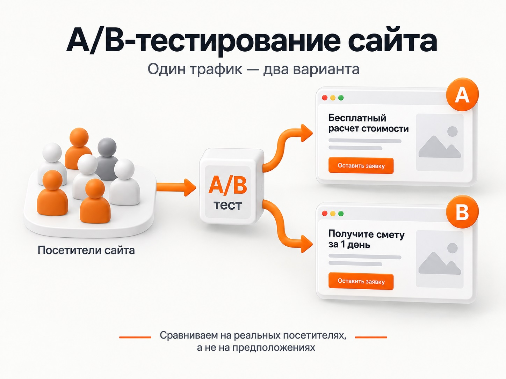
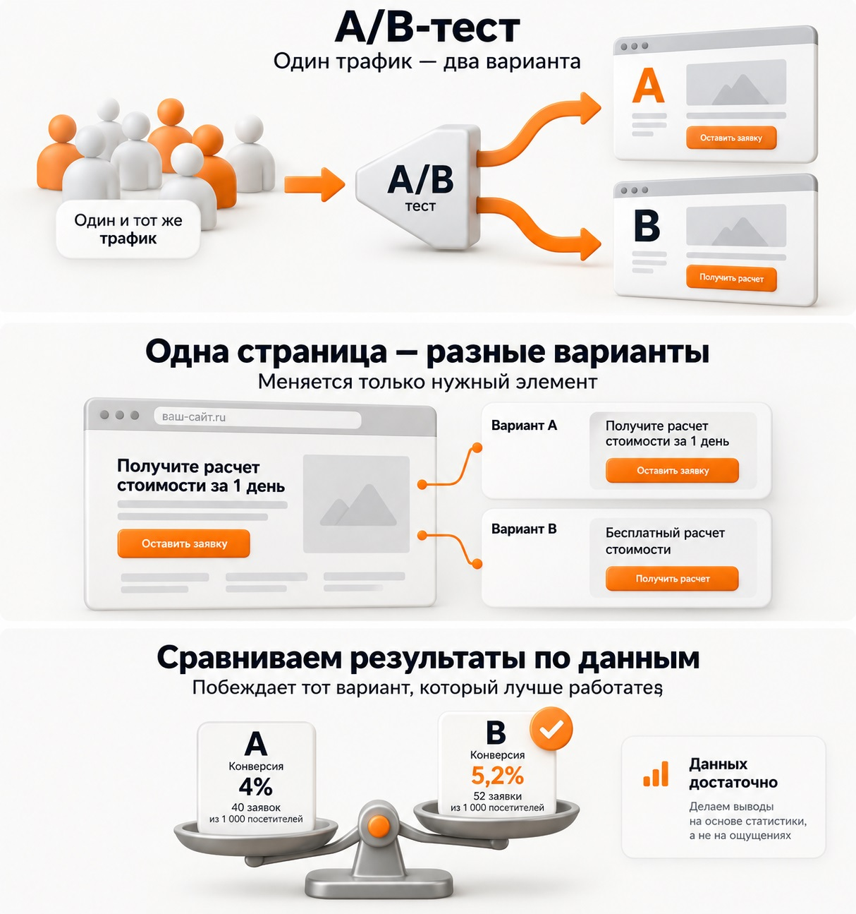

Блог о платном трафике
A/B-тестирование сайта: что это и как провести
A/B-тестирование сайта - это способ сравнить два варианта страницы или отдельного элемента на реальных посетителях. Часть аудитории видит вариант A, другая часть - вариант B. После накопления данных сравнивают конверсию, количество заявок, продажи или другую заранее выбранную метрику.
Например, на одном лендинге первый экран обещает «Бесплатный расчет стоимости», а на втором - «Получите смету за 1 день». Вместо спора о том, какой оффер выглядит убедительнее, можно одновременно отправить трафик на обе версии и посмотреть на реальные обращения.
Главное слово здесь - одновременно. Сравнение показателей сайта в июне и после редизайна в июле не является полноценным A/B-тестом. За это время могли измениться спрос, реклама, конкуренция, состав аудитории и десятки других факторов.
Что такое A/B-тестирование простыми словами

В классическом эксперименте есть:
- вариант A - исходная версия;
- вариант B - измененная версия;
- две сопоставимые группы посетителей;
- одна основная метрика, по которой принимается решение.
Пользователи распределяются между вариантами случайным образом. После этого сравнивается их поведение.
Именно такая логика отличает A/B-тест от обычного изменения сайта. Если я просто переделал первый экран и через неделю получил больше заявок, нельзя уверенно утверждать, что причина именно в новом экране. При параллельном тесте влияние внешних факторов значительно меньше.
В идеальном эксперименте варианты отличаются только проверяемой гипотезой. Если одновременно изменить заголовок, форму, цену, фотографии и половину структуры лендинга, определить причину результата уже невозможно.
Иногда сравнение двух полностью разных страниц тоже имеет смысл. В этом случае тест отвечает на вопрос «какая версия сайта работает лучше», но не объясняет, какое конкретно изменение привело к разнице.
Зачем нужен A/B-тест сайта
Основная задача - повышать эффективность сайта на основе данных, а не собственных предпочтений.
У рекламного проекта есть простая связка:
трафик -> сайт -> заявка -> продажа
Можно хорошо настроить Яндекс Директ и приводить подходящую аудиторию, но получать дорогие заявки из-за слабой посадочной страницы. И наоборот, повышение конверсии сайта позволяет получать больше обращений при том же рекламном трафике.
Поэтому A/B-тестирование особенно полезно в проектах, где уже есть стабильный поток посетителей и хочется последовательно улучшать результат.
Конверсия в Яндекс Директ: что это и как ее считать
Тест может помочь:
- повысить конверсию посетителя в заявку;
- снизить CPA или CPL;
- увеличить количество заказов;
- увеличить долю пользователей, которые начинают или заканчивают заполнение формы;
- проверить новый оффер;
- сравнить разные посадочные страницы;
- проверить изменение цены или условий;
- оценить влияние дизайна и структуры страницы.
Но я бы не ставил целью просто «увеличить кликабельность кнопки». Пользователи могут начать нажимать ее чаще, а заявок больше не станет.
Чем ближе основная метрика к деньгам бизнеса, тем полезнее эксперимент.
Что можно тестировать на сайте
Практически любой элемент, который способен влиять на решение посетителя.
Оффер и первый экран
Для рекламного трафика это один из первых кандидатов на тестирование.
Можно сравнить:
- разные формулировки предложения;
- акцент на цене или результате;
- конкретное преимущество вместо общего рекламного текста;
- разные условия акции;
- наличие цены на первом экране.
Изменение оффера обычно интереснее теста оттенка кнопки, потому что оно способно заметно изменить восприятие всей страницы.
Заголовки и тексты
Можно проверить более конкретный заголовок, другое описание услуги, сокращенный текст или изменение порядка аргументов.
Особенно полезно тестировать тексты, если из аналитики видно, что посетители заходят на страницу, но плохо переходят к целевому действию.
Кнопки и призывы к действию
Можно сравнивать:
- текст кнопки;
- расположение;
- размер;
- количество кнопок;
- фиксированную кнопку на мобильной версии.
При этом оценивать желательно не только нажатия на кнопку, но и конечные заявки.
Формы
У формы можно тестировать количество полей, последовательность вопросов, многошаговую механику, необходимость телефона, расположение формы на странице.
Иногда сокращение формы действительно увеличивает число отправок. Но есть обратная сторона: вместе с количеством заявок может снизиться их качество.
Если бизнес оценивает рекламу не только по CPL, полезно смотреть результаты теста вплоть до квалифицированных обращений и продаж.
Сквозная аналитика Яндекс Директ
Структуру страницы
Можно проверить порядок блоков, расположение кейсов, отзывов, стоимости, преимуществ и формы.
Например, одну и ту же страницу можно сделать в двух вариантах:
A - сначала описание услуги, потом кейсы;
B - сначала конкретный результат и кейсы, потом подробное описание.
Полностью разные посадочные страницы
Иногда проще создать два лендинга и сравнить их целиком.
Такой вариант подходит, когда проверяется принципиально другая концепция сайта или когда новая страница уже подготовлена и нужно понять, можно ли заменить ей старую.
Как провести A/B-тестирование сайта
Есть несколько нормальных способов. Выбор зависит от сайта, источников трафика и сложности изменений.
| Способ | Для чего подходит |
|---|---|
| Две страницы или два поддомена | Простое самостоятельное сравнение готовых лендингов |
| Varioqub в Яндекс Метрике | Изменение элементов сайта и полноценные веб-эксперименты |
| A/B-эксперимент в Яндекс Директе | Сравнение рекламных кампаний, настроек и посадочных страниц |
| Специализированный сервис | Системная работа с большим количеством экспериментов |
Две версии сайта своими силами
Самый понятный вариант - самостоятельно сделать две версии страницы.
Например:
site.ru/landing-a/
и
test.site.ru/
или две страницы внутри одного домена.
После этого трафик распределяется между ними примерно в равных долях, а результаты фиксируются одной системой аналитики.
Это позволяет провести тест без отдельной платформы для веб-экспериментов. Особенно удобно, если большая часть посетителей приходит из платной рекламы и можно контролировать распределение трафика.
Но вручную просто отправить половину рекламных кампаний на одну страницу, а половину на другую недостаточно. Кампании могут получать разную аудиторию. Лучше использовать механизм, который действительно случайным образом распределяет пользователей.
Если для эксперимента создаются отдельные URL, нужно учитывать SEO. Google рекомендует указывать для тестовых вариантов основной URL через rel="canonical", а при временной переадресации использовать 302 вместо постоянного 301. Эксперимент не следует оставлять работающим неопределенно долго.
A/B-тест через Varioqub и Яндекс Метрику

У Яндекса есть собственная система веб-экспериментов Varioqub. Она работает вместе с Яндекс Метрикой и подходит как для простых лендингов, так и для более сложных сайтов.
Сейчас в Varioqub есть несколько вариантов проведения эксперимента.
Визуальный редактор подходит, если нужно изменить текст, кнопку, изображение или другой элемент страницы.
Редирект позволяет сравнивать несколько уже готовых посадочных страниц.
Флаги предназначены для более сложных экспериментов, когда изменения реализуются непосредственно в коде сайта.
То есть необязательно создавать два отдельных сайта только ради другого текста на кнопке. Можно оставить одну страницу и показывать разным группам посетителей разные варианты элемента.
Для работы Varioqub на сайт подключается его код, а статистика эксперимента связывается с данными счетчика Яндекс Метрики. Посетители распределяются по экспериментальным группам, после чего результаты можно оценивать по выбранным метрикам.
Для владельца сайта это один из наиболее логичных вариантов, если Яндекс Метрика уже используется как основная система аналитики.
A/B-тестирование через Яндекс Директ
Если основная задача - проверить именно рекламный трафик, эксперимент можно организовать непосредственно в Яндекс Директе.
По состоянию на 2026 год A/B-эксперименты настраиваются в Директе. Они доступны для Единой перфоманс-кампании при продвижении сайтов и приложений, кроме показов в мессенджерах, а также для медийных кампаний.
Можно сравнивать, например:
- две посадочные страницы;
- разные акции;
- разные креативы;
- отдельные настройки рекламной кампании.
Если тестируется посадочная страница, логика должна быть простой: остальные существенные параметры сохраняются одинаковыми, меняется URL.
Яндекс отдельно рекомендует в рамках одного эксперимента проверять одну гипотезу. Для сравнения кампаний создаются идентичные варианты, которые отличаются именно тестируемой настройкой.
Результаты можно дополнительно анализировать в Яндекс Метрике в отчете «Директ, эксперименты», включая конверсии и пользовательские показатели.
Это хороший способ проверить две страницы именно на аудитории из Яндекс Директа, потому что трафик распределяется в рамках полноценного эксперимента, а не вручную между случайно получившимися кампаниями.
В старых инструкциях еще можно встретить создание экспериментов через Яндекс Аудитории. Сейчас новые эксперименты там уже не создаются - Яндекс перенес настройку в Директ Про.
Сторонние сервисы A/B-тестирования
Есть отдельный класс платформ для веб-экспериментов. Они позволяют распределять посетителей, менять элементы страницы, запускать несколько вариантов и считать статистическую значимость результатов.
Такой подход имеет смысл, если A/B-тесты проводятся постоянно и являются частью работы с продуктом.
Для обычного рекламного лендинга я бы сначала посмотрел на более простые варианты: Varioqub или эксперимент непосредственно через Яндекс Директ. Добавлять еще одну систему только ради одного теста часто нет необходимости.
Как правильно запустить A/B-тест
Сам инструмент не гарантирует правильного результата. Ошибиться можно еще до запуска.
1. Определить проблему
Сначала нужно понять, что именно хочется улучшить.
Например:
«Посетители переходят из рекламы, но редко оставляют заявки».
Это проблема.
«Давайте сделаем кнопку оранжевой» - уже решение, которое пока ничем не подтверждено.
2. Сформулировать гипотезу
Хорошая гипотеза связывает конкретное изменение с ожидаемым результатом.
Например:
«Если на первом экране вместо общего описания услуги показать конкретный результат для клиента, конверсия в заявку увеличится».
После этого понятно, что именно нужно изменить и какую метрику смотреть.
3. Выбрать основную метрику
Для рекламного сайта я обычно смотрел бы прежде всего на:
- заявки;
- квалифицированные лиды;
- покупки;
- продажи;
- CPA;
- выручку, если данные позволяют ее связать с вариантом сайта.
Промежуточные показатели тоже полезны, но они не должны подменять конечный результат.
Если вариант B получил больше кликов по кнопке, но меньше отправленных форм, победителем его считать странно.
Как оценить эффективность Яндекс Директа
4. Проверить аналитику до запуска
До начала теста нужно убедиться, что цели действительно работают.
Проверьте отправку формы, звонки, покупки и другие действия, по которым будет приниматься решение.
Иначе можно несколько недель собирать эксперимент, а затем обнаружить, что часть конверсий вообще не записывалась.
Как проверить цель в Яндекс Метрике
5. Разделить аудиторию
Пользователи должны попадать в A и B одновременно и по возможности случайным образом.
Неправильный вариант:
- утром показываем страницу A;
- вечером B.
Или:
- поисковый трафик ведем на A;
- РСЯ на B.
Здесь меняется сразу несколько факторов, поэтому сравнение ничего нормально не доказывает.
6. Не менять эксперимент во время работы
После запуска не стоит каждые два дня исправлять заголовки, формы и цены.
Иначе в одном варианте окажется сразу несколько разных версий, а накопленная статистика потеряет смысл.
7. Дождаться достаточного количества данных
Разница между двумя страницами может появиться случайно.
Допустим, вариант A получил 4 заявки, а B - 6. Формально B показывает результат на 50% выше. Но по десяти конверсиям делать серьезные выводы опасно.
Для A/B-тестирования важна статистическая значимость. Чем больше трафика и целевых действий получает сайт, тем меньшую разницу между вариантами можно надежно обнаружить. Сам Яндекс также указывает зависимость чувствительности эксперимента от количества визитов.
В инструментах Varioqub есть расчет выборки и минимального обнаруживаемого эффекта, которые помогают оценить необходимый объем данных до запуска эксперимента.
Как оценивать результаты

Предположим, получились такие условные данные:
| Вариант A | Вариант B | |
|---|---|---|
| Посетители | 1 000 | 1 000 |
| Заявки | 40 | 52 |
| Конверсия | 4% | 5,2% |
На первый взгляд B очевидно лучше.
Но окончательный вывод зависит не только от процентов. Нужно проверить, достаточно ли данных, чтобы считать получившуюся разницу устойчивой.
А для бизнеса я бы пошел еще дальше.
Допустим, вариант B принес больше заявок, но значительная часть оказалась нецелевой. Тогда повышение формальной конверсии сайта могло ничего не дать в продажах.
Поэтому при возможности полезно смотреть всю цепочку:
вариант сайта -> заявка -> квалификация -> продажа -> выручка
Особенно это актуально в B2B, недвижимости, дорогих услугах и других нишах, где качество одного обращения намного важнее общего количества заполненных форм.
Сквозная аналитика Яндекс Директ
Частые ошибки при A/B-тестировании сайта
Сравнивать «до» и «после»
Самая распространенная ошибка. Старая страница работала месяц, затем ее заменили новой и сравнили два периода.
Это полезное наблюдение, но не полноценный A/B-тест.
Менять слишком много элементов
Если одновременно изменились оффер, дизайн, форма и цена, эксперимент покажет только победившую страницу целиком.
Понять причину изменения конверсии не получится.
Остановить тест при первых хороших цифрах
Сегодня B может лидировать на 30%, а через неделю показатели сравняются.
Чем меньше данных, тем сильнее результаты зависят от случайных колебаний.
Тестировать мелочь вместо важной гипотезы
Цвет кнопки легко поменять, поэтому его часто выбирают для первого эксперимента.
Но если посетитель не понимает предложение, кнопка другого цвета вряд ли решит главную проблему.
Я бы сначала проверял:
- оффер;
- соответствие страницы рекламному запросу;
- первый экран;
- цену и условия;
- форму заявки;
- аргументы и доказательства;
- структуру страницы.
И уже после этого косметические элементы.
Смотреть только на конверсию формы
Больше заявок не всегда означает лучший результат.
Если одна версия страницы обещает слишком привлекательные условия, она действительно может повысить CR и одновременно привести больше неподходящих клиентов.
Для бизнеса победитель - не обязательно страница с самым высоким процентом отправленных форм.
Когда A/B-тестирование не имеет смысла
A/B-тест полезен только тогда, когда сайт способен накопить достаточный объем данных.
Если лендинг получает 100 посетителей в месяц и одну заявку, деление трафика между двумя вариантами может растянуть эксперимент на очень долгий срок.
В такой ситуации сначала полезнее искать очевидные проблемы:
- проверить корректность аналитики;
- посмотреть Вебвизор;
- изучить поисковые запросы и рекламный трафик;
- проверить мобильную версию;
- проанализировать формы;
- проверить оффер;
- поговорить с клиентами и отделом продаж.
Когда появляется достаточный объем посетителей и конверсий, A/B-тестирование становится намного полезнее.
Какой способ A/B-тестирования сайта выбрать
Если нужно один раз сравнить две готовые посадочные страницы из Яндекс Директа, я бы использовал встроенный A/B-эксперимент Директа.
Если нужно регулярно менять заголовки, кнопки, изображения и другие элементы непосредственно на сайте, логичнее использовать Varioqub через Яндекс Метрику.
Если есть собственная разработка, можно самостоятельно создать две версии страницы или сайта и организовать корректное случайное распределение аудитории.
Сам способ вторичен. Главное - одновременно показывать сопоставимым пользователям варианты A и B, заранее определить метрику и дождаться достаточного объема данных.
A/B-тестирование нужно не ради самого эксперимента. Его задача - понять, какое предложение, страница или элемент сайта действительно дает бизнесу лучший результат.